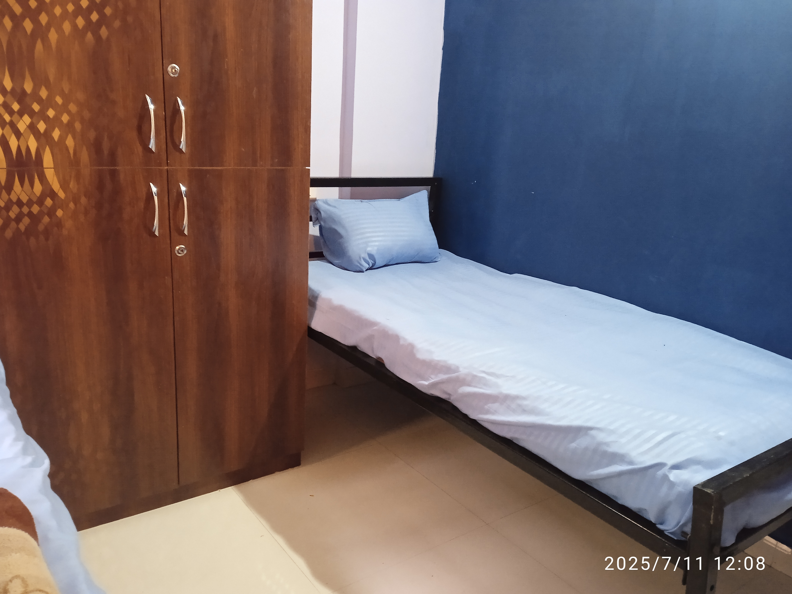

Tata Communications Employee Accommodation in Dighi

Are you a Tata Communications (TCL) employee seeking convenient and comfortable PG accommodation in Dighi? Our PG is ideally located to provide a hassle-free commute to TCL, offering a professional and secure living environment tailored for working professionals.
Why Our PG is Ideal for TCL Employees:
- Proximity to TCL: Located just a 15-minute walk from Tata Communications, saving you valuable travel time.
- Professional Environment: A quiet and well-maintained atmosphere conducive to working professionals.
- Secure Living: 24/7 CCTV surveillance ensures your safety and peace of mind.
- Modern Amenities: Comfortable double sharing rooms with all essential amenities, including RO purified drinking water and daily cleaning services.
- Convenient Facilities: Access to light cooking facilities and laundry services.
Accommodation Tailored for Professionals
Our PG provides well-maintained double sharing rooms, perfect for employees. We focus on providing a comfortable and secure space so you can relax after work.
For detailed pricing and what's included, please visit our Rooms & Pricing page.
Find your perfect accommodation near Tata Communications today!
Contact Us to Learn More